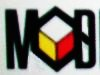

此测验已结束
您对 NetBeans 历史了解多少？答对问题的所有提交内容都有机会抽取五个 U 盘和一件 NetBeans 5.5 T 恤。仅接受每个参与者提交的一个答案。
此测验已结束，将联系获奖者。下面给出了正确的答案。
这是从哪里开始的？
小酒馆
网吧
学校
作为 sourceforge 项目。
其中的哪些人参与成立了 NetBeans 公司？
Roman Stanek
Roman Strobl
Gregg Sporar
Geertjan Wielenga.
NetBeans IDE 的第一个项目名称是什么？
Velvy
Xelfi
Zephir
Psifi
NetBeans 名称的由来？
Beans 暗指 Java 咖啡，Net 来自 Sun 的口号“网络就是计算机”。
来自 "Network JavaBeans" 功能建议（后来放弃了）
Beans 是因为四个创始人喝了很多咖啡，而 Net 是因为类似 CVS 和开发者协作的网络功能
这两个术语是从新颖的 IT 和奇客术语中随机挑选的。
下面哪幅图片从来就不是 NetBeans 徽标的原始设计？

Jaroslav Tulach 被人称为 NetBeans 的“让大人难堪的坏孩子”，因为...
他在开发者论坛上怒斥经常打错字的程序员
他编写的代码混乱不堪，只有他自己能看明白
当有人破解软件版本时，他就会大发脾气
他坚持测试以确保 API 兼容性
NetBeans 平台的很多概念借鉴了哪个操作系统？
Solaris Unix
OS/2
DOS
MacOS
哪个是 NetBeans 使用的第一个 GUI 工具包？
Swing
SWT
AFC
AWT
正确答案：1C、2A、3B、4B、5C、6D、7B、8A。